0 1
REC
OBSERVE
Observes where user choices begin to emerge.
A neutral system for observing, classifying, and outputting human behavior.
Observes where user choices begin to emerge.
Classifies repeated inputs by structure and rule.
Outputs classified data as an analytical model.



관찰 대상의 실시간 피드와 저장된 데이터를 확인하십시오. 접속 권한에 따라 채널 상태가 다를 수 있습니다.
NULL observes human behavior, classifies repeated patterns, and outputs them as controlled data.
It operates through structure, record, interface, and system rather than emotional narrative.
Emotion is removed.
Only behavior remains.
Every signal is
organized by rule.
The interface is
the brand.
Nothing is expressive.
Everything is regulated.

Neutral form becomes neutral observation.
Clear structure becomes classified data.
Functional typography becomes system interface.

Black / White /
Gray / Signal Red
Neue Haas Grotesk
Grid / Index /
Status Bar / Data Card

CCTV / Subject /
Archive / Signal
NULL does not describe emotion. NULL records structure.
관찰 대상의 실시간 피드와 저장된 데이터를 확인하십시오. 접속 권한에 따라 채널 상태가 다를 수 있습니다.
Continuous multi-channel capture of public behavior.
Behavior is analyzed and classified in real time.
Structured insight is generated for further analysis.
관찰 대상의 실시간 피드와 저장된 데이터를 확인하십시오. 접속 권한에 따라 채널 상태가 다를 수 있습니다.
피식체는 감정이나 서사로 식별되지 않는다.
시스템은 보이는 행동과 측정 가능한 상태만 추출한다.
The subject remains within Zone A1.
Walking direction is stable.
No direct interaction detected.
관찰 구역에서 수집된 행동 신호를 실시간 수치와 상태값으로 변환하여 보여주는 브랜드 리포트 대시보드입니다.
Observes where user choices begin to emerge.
Classifies repeated inputs by structure and rule.
Outputs classified data as an analytical model.
시스템은 움직임, 일시 중지, 방향 및 반복 동작을 기록합니다.
| 01 | 14:27:22:04 | Subject enters zone | ZONE_A1 | |
| 02 | 14:27:25:11 | → | Direction change | ZONE_A1 |
| 03 | 14:27:31:08 | Pause detected (9.2s) | ZONE_A1 | |
| 04 | 14:27:40:15 | → | Direction change | ZONE_A1 |
| 05 | 14:27:52:23 | → | Accelerated movement | ZONE_A1 |
| 06 | 14:28:01:19 | ↗ | Exit zone (North-East) | EXIT |
포착된 인간의 흔적은 압축·분류·저장되어 검색 가능한 아카이브 객체로 전환됩니다.
BROWSE INDEXED RECORDS OF OBSERVED BEHAVIOR. EACH ARCHIVE OBJECT CONTAINS COMPRESSED VISUAL AND METADATA TRACES FOR LONG-TERM RETENTION AND RETRIEVAL.
| ID | SOURCE | TIMESTAMP | RETENTION | HASH STATUS |
|---|---|---|---|---|
| ARC_001 | CAM_04 / ZONE_A1 | 14:27:31:08 | 90 DAYS | VERIFIED |
| ARC_002 | CAM_01 / ZONE_B2 | 11:08:22:14 | 90 DAYS | VERIFIED |
| ARC_003 | CAM_03 / ZONE_C3 | 09:47:12:05 | 90 DAYS | VERIFIED |
| ARC_004 | CAM_02 / ZONE_D4 | 16:03:55:21 | 90 DAYS | VERIFIED |
| ARC_005 | CAM_06 / ZONE_A1 | 18:21:44:09 | 90 DAYS | VERIFIED |
| ARC_006 | CAM_05 / ZONE_B1 | 07:13:02:17 | 90 DAYS | VERIFIED |
| ARC_007 | CAM_07 / ZONE_C2 | 20:11:09:18 | 90 DAYS | VERIFIED |
| ARC_008 | CAM_01 / ZONE_D3 | 12:55:31:00 | 90 DAYS | VERIFIED |
TOTAL COMPRESSED FRAMES STORED IN ARCHIVE
RECORDS CURRENTLY INDEXED AND ACCEPTED
STANDARD RETENTION PERIOD FOR ALL ARCHIVE OBJECTS
ALL ARCHIVE OBJECTS ARE RETAINED FOR A MINIMUM OF 90 DAYS UNLESS OVERRIDDEN BY PROTOCOL. RETENTION POLICIES ARE DEFINED UNDER SYSTEM PROTOCOL.
QUERY THE PUBLIC INDEX OF AVAILABLE ARCHIVE OBJECTS
NULL 시스템의 근본적인 목적과 관찰의 3원칙을 명시한 규격서입니다.
우리는 감정을 해석하지 않는다. 우리는 단지 형태를 남길 뿐이다.
NULL 시스템은 인간의 불완전한 기억과 파편화된 조각들을 관찰 가능한 상태로 압축하고, 영구적인 데이터의 형태로 치환하기 위해 설계되었다.
개입하지 않는다. 관찰자는 피관찰자의 선택에 어떠한 물리적, 논리적 영향도 미쳐서는 안 된다
누락 없이 기록한다. 의미 없어 보이는 정적(Static)조차 중요한 신호 값으로 처리된다
감정을 배제한다. 모든 기억은 결국 0과 1의 구조로 분해되어 정규 아카이브(CAM_04)에 보관될 수 있다
수집된 모든 신호는 보이드(Void) 프로세싱 코어(CAM_03)를 거쳐 압축되며, 식별 불가능한 해시로 암호화되어 ARCHIVE 섹션에 보관된다. 데이터의 폐기 권한은 오직 시스템 자체에 귀속된다.